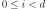

KarhunenLoeveLifting¶
-
class
KarhunenLoeveLifting(*args)¶ Function dedicated to the lift of Karhunen Loeve coefficients into a field.
Parameters: KLResult :
KarhunenLoeveResultThe result structure created by a
KarhunenLoeveAlgorithmNotes
The class
KarhunenLoeveLiftingis a specific functionPointToFieldFunctiondedicated to the lift of Karhunen Loeve coefficients into a field.See the documentation of
KarhunenLoeveResultto get information on the lift function.The function acts on a vector of coefficients (
Point) to create a field associated to the Karhunen Loeve mesh (Mesh).Methods
__call__(…) <==> x(…)getCallsNumber()Get the number of calls of the function. getClassName()Accessor to the object’s name. getId()Accessor to the object’s id. getInputDescription()Get the description of the input vector. getInputDimension()Get the dimension of the input vector. getMarginal(*args)Get the marginal(s) at given indice(s). getName()Accessor to the object’s name. getOutputDescription()Get the description of the output field values. getOutputDimension()Get the dimension of the output field values. getOutputMesh()Get the output mesh. getShadowedId()Accessor to the object’s shadowed id. getVisibility()Accessor to the object’s visibility state. hasName()Test if the object is named. hasVisibleName()Test if the object has a distinguishable name. setInputDescription(inputDescription)Set the description of the input vector. setName(name)Accessor to the object’s name. setOutputDescription(outputDescription)Set the description of the output field values. setShadowedId(id)Accessor to the object’s shadowed id. setVisibility(visible)Accessor to the object’s visibility state. -
__init__(*args)¶ x.__init__(…) initializes x; see help(type(x)) for signature
-
getCallsNumber()¶ Get the number of calls of the function.
Returns: callsNumber : int
Counts the number of times the function has been called since its creation.
-
getClassName()¶ Accessor to the object’s name.
Returns: class_name : str
The object class name (object.__class__.__name__).
-
getId()¶ Accessor to the object’s id.
Returns: id : int
Internal unique identifier.
-
getInputDescription()¶ Get the description of the input vector.
Returns: inputDescription :
DescriptionDescription of the input vector.
-
getInputDimension()¶ Get the dimension of the input vector.
Returns: d : int
Dimension
 of the input vector.
of the input vector.
-
getMarginal(*args)¶ Get the marginal(s) at given indice(s).
Parameters: i : int or list of ints, 
Indice(s) of the marginal(s) to be extracted. output vector.
Returns: function :
KarhunenLoeveLiftingThe initial function restricted to the concerned marginal(s) at the indice(s)
 .
.
-
getName()¶ Accessor to the object’s name.
Returns: name : str
The name of the object.
-
getOutputDescription()¶ Get the description of the output field values.
Returns: outputDescription :
DescriptionDescription of the output field values.
-
getOutputDimension()¶ Get the dimension of the output field values.
Returns: d’ : int
Dimension
 of the output field values.
of the output field values.
-
getShadowedId()¶ Accessor to the object’s shadowed id.
Returns: id : int
Internal unique identifier.
-
getVisibility()¶ Accessor to the object’s visibility state.
Returns: visible : bool
Visibility flag.
-
hasName()¶ Test if the object is named.
Returns: hasName : bool
True if the name is not empty.
-
hasVisibleName()¶ Test if the object has a distinguishable name.
Returns: hasVisibleName : bool
True if the name is not empty and not the default one.
-
setInputDescription(inputDescription)¶ Set the description of the input vector.
Parameters: inputDescription : sequence of str
Description of the input vector.
-
setName(name)¶ Accessor to the object’s name.
Parameters: name : str
The name of the object.
-
setOutputDescription(outputDescription)¶ Set the description of the output field values.
Parameters: outputDescription : sequence of str
Description of the output field values.
-
setShadowedId(id)¶ Accessor to the object’s shadowed id.
Parameters: id : int
Internal unique identifier.
-
setVisibility(visible)¶ Accessor to the object’s visibility state.
Parameters: visible : bool
Visibility flag.
-
 of the output field.
of the output field.